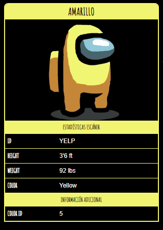

Amarillo

Amarillo
es uno de los colores de Among Us que los jugadores pueden personalizar.
Curiosidades
- Este color representa a los jugadores en el mapa de administración.
- Se muestra a Amarillo acariciando al Robot y al Mini Tripulante en una foto promocional.
- En la sección "Cómo jugar", Amarillo es el cadáver.